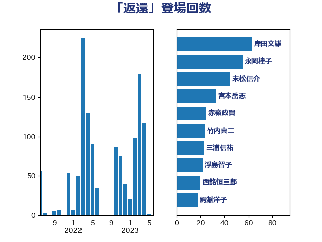

単語「返還」

| 岸田文雄 | 自由民主党 | 63 回 |
| 永岡桂子 | 自由民主党 | 55 回 |
| 末松信介 | 自由民主党 | 45 回 |
| 宮本岳志 | 日本共産党 | 33 回 |
| 赤嶺政賢 | 日本共産党 | 25 回 |
| 竹内真二 | 公明党 | 24 回 |
| 三浦信祐 | 公明党 | 23 回 |
| 浮島智子 | 公明党 | 22 回 |
| 西銘恒三郎 | 自由民主党 | 20 回 |
| 鰐淵洋子 | 公明党 | 18 回 |
| 石井啓一 | 公明党 | 18 回 |
| 倉林明子 | 日本共産党 | 18 回 |
| 道下大樹 | 立憲民主党 | 17 回 |
| 吉良よし子 | 日本共産党 | 17 回 |
| 谷田川元 | 立憲民主党 | 16 回 |
| 大塚耕平 | 国民民主党 | 13 回 |
| 穀田恵二 | 日本共産党 | 12 回 |
| 高良鉄美 | 無所属 | 11 回 |
| 高木陽介 | 公明党 | 11 回 |
| 林芳正 | 自由民主党 | 11 回 |
| 本庄知史 | 立憲民主党 | 11 回 |
| 岡田直樹 | 自由民主党 | 11 回 |
| 加藤勝信 | 自由民主党 | 11 回 |
| 高橋千鶴子 | 日本共産党 | 10 回 |
| 野田佳彦 | 立憲民主党 | 10 回 |
| 芳賀道也 | 国民民主党 | 10 回 |
| 後藤茂之 | 自由民主党 | 10 回 |
| 紙智子 | 日本共産党 | 9 回 |
| 篠原豪 | 立憲民主党 | 9 回 |
| 田村智子 | 日本共産党 | 9 回 |
| 山崎正恭 | 公明党 | 9 回 |
| 古川禎久 | 自由民主党 | 9 回 |
| 勝部賢志 | 立憲民主党 | 9 回 |
| 金城泰邦 | 公明党 | 8 回 |
| 西村康稔 | 自由民主党 | 8 回 |
| 福山哲郎 | 立憲民主党 | 8 回 |
| 杉本和巳 | 日本維新の会 | 8 回 |
| 新垣邦男 | 立憲民主党 | 8 回 |
| 伊波洋一 | 無所属 | 8 回 |
| 青山繁晴 | 自由民主党 | 7 回 |
| 田中健 | 国民民主党 | 7 回 |
| 野村哲郎 | 自由民主党 | 6 回 |
| 田村まみ | 国民民主党 | 6 回 |
| 松野博一 | 自由民主党 | 6 回 |
| 有村治子 | 自由民主党 | 6 回 |
| 川田龍平 | 立憲民主党 | 6 回 |
| 山本香苗 | 公明党 | 6 回 |
| 宮崎政久 | 自由民主党 | 6 回 |
| 安江伸夫 | 公明党 | 6 回 |
| 下野六太 | 公明党 | 6 回 |
| 逢坂誠二 | 立憲民主党 | 5 回 |
| 萩生田光一 | 自由民主党 | 5 回 |
| 稲津久 | 公明党 | 5 回 |
| 秋葉賢也 | 自由民主党 | 5 回 |
| 石橋通宏 | 立憲民主党 | 5 回 |
| 源馬謙太郎 | 立憲民主党 | 5 回 |
| 浅川義治 | 日本維新の会 | 5 回 |
| 東徹 | 日本維新の会 | 5 回 |
| 木村英子 | れいわ新選組 | 5 回 |
| 山井和則 | 立憲民主党 | 5 回 |
| 音喜多駿 | 日本維新の会 | 4 回 |
| 藤丸敏 | 自由民主党 | 4 回 |
| 村田享子 | 立憲民主党 | 4 回 |
| 杉尾秀哉 | 立憲民主党 | 4 回 |
| 早稲田ゆき | 立憲民主党 | 4 回 |
| 斉藤鉄夫 | 公明党 | 4 回 |
| 後藤祐一 | 立憲民主党 | 4 回 |
| 山本太郎 | れいわ新選組 | 4 回 |
| 小倉將信 | 自由民主党 | 4 回 |
| 伊藤孝江 | 公明党 | 4 回 |
| 馬場伸幸 | 日本維新の会 | 3 回 |
| 阿部知子 | 立憲民主党 | 3 回 |
| 長妻昭 | 立憲民主党 | 3 回 |
| 鈴木俊一 | 自由民主党 | 3 回 |
| 稲富修二 | 立憲民主党 | 3 回 |
| 矢倉克夫 | 公明党 | 3 回 |
| 浜田靖一 | 自由民主党 | 3 回 |
| 泉健太 | 立憲民主党 | 3 回 |
| 河野義博 | 公明党 | 3 回 |
| 森本真治 | 立憲民主党 | 3 回 |
| 松原仁 | 立憲民主党 | 3 回 |
| 早坂敦 | 日本維新の会 | 3 回 |
| 徳永エリ | 立憲民主党 | 3 回 |
| 市村浩一郎 | 日本維新の会 | 3 回 |
| 小林茂樹 | 自由民主党 | 3 回 |
| 國場幸之助 | 自由民主党 | 3 回 |
| 吉田統彦 | 立憲民主党 | 3 回 |
| 高木啓 | 自由民主党 | 2 回 |
| 青木一彦 | 自由民主党 | 2 回 |
| 西岡秀子 | 国民民主党 | 2 回 |
| 藤巻健太 | 日本維新の会 | 2 回 |
| 葉梨康弘 | 自由民主党 | 2 回 |
| 菅家一郎 | 自由民主党 | 2 回 |
| 羽田次郎 | 立憲民主党 | 2 回 |
| 福田昭夫 | 立憲民主党 | 2 回 |
| 石川香織 | 立憲民主党 | 2 回 |
| 田村貴昭 | 日本共産党 | 2 回 |
| 田村憲久 | 自由民主党 | 2 回 |
| 牧山ひろえ | 立憲民主党 | 2 回 |
| 浜田聡 | NHK党 | 2 回 |
| 浅野哲 | 国民民主党 | 2 回 |
| 池下卓 | 日本維新の会 | 2 回 |
| 水岡俊一 | 立憲民主党 | 2 回 |
| 比嘉奈津美 | 自由民主党 | 2 回 |
| 柴田巧 | 日本維新の会 | 2 回 |
| 柳ヶ瀬裕文 | 日本維新の会 | 2 回 |
| 本村伸子 | 日本共産党 | 2 回 |
| 島村大 | 自由民主党 | 2 回 |
| 岩本剛人 | 自由民主党 | 2 回 |
| 山田勝彦 | 立憲民主党 | 2 回 |
| 山添拓 | 日本共産党 | 2 回 |
| 山下芳生 | 日本共産党 | 2 回 |
| 小野泰輔 | 日本維新の会 | 2 回 |
| 宮本徹 | 日本共産党 | 2 回 |
| 大西健介 | 立憲民主党 | 2 回 |
| 城井崇 | 立憲民主党 | 2 回 |
| 和田有一朗 | 日本維新の会 | 2 回 |
| 伊藤渉 | 公明党 | 2 回 |
| 井上哲士 | 日本共産党 | 2 回 |
| 串田誠一 | 日本維新の会 | 2 回 |
| 上野通子 | 自由民主党 | 2 回 |
| 上田清司 | 国民民主党 | 2 回 |
| 高見康裕 | 自由民主党 | 1 回 |
| 高橋光男 | 公明党 | 1 回 |
| 高橋はるみ | 自由民主党 | 1 回 |
| 高木真理 | 立憲民主党 | 1 回 |
| 青山大人 | 立憲民主党 | 1 回 |
| 長浜博行 | 無所属 | 1 回 |
| 鈴木義弘 | 国民民主党 | 1 回 |
| 鈴木敦 | 国民民主党 | 1 回 |
| 金子俊平 | 自由民主党 | 1 回 |
| 野田聖子 | 自由民主党 | 1 回 |
| 辻元清美 | 立憲民主党 | 1 回 |
| 西村明宏 | 自由民主党 | 1 回 |
| 藤岡隆雄 | 立憲民主党 | 1 回 |
| 蓮舫 | 立憲民主党 | 1 回 |
| 菊田真紀子 | 立憲民主党 | 1 回 |
| 若宮健嗣 | 自由民主党 | 1 回 |
| 舟山康江 | 国民民主党 | 1 回 |
| 羽生田俊 | 自由民主党 | 1 回 |
| 美延映夫 | 日本維新の会 | 1 回 |
| 緒方林太郎 | 無所属 | 1 回 |
| 福島伸享 | 無所属 | 1 回 |
| 福島みずほ | 社会民主党 | 1 回 |
| 石川大我 | 立憲民主党 | 1 回 |
| 石井苗子 | 日本維新の会 | 1 回 |
| 石井拓 | 自由民主党 | 1 回 |
| 畦元将吾 | 自由民主党 | 1 回 |
| 田名部匡代 | 立憲民主党 | 1 回 |
| 猪瀬直樹 | 日本維新の会 | 1 回 |
| 片山大介 | 日本維新の会 | 1 回 |
| 滝波宏文 | 自由民主党 | 1 回 |
| 湯原俊二 | 立憲民主党 | 1 回 |
| 渡辺猛之 | 自由民主党 | 1 回 |
| 清水貴之 | 日本維新の会 | 1 回 |
| 浜口誠 | 国民民主党 | 1 回 |
| 浅田均 | 日本維新の会 | 1 回 |
| 河野太郎 | 自由民主党 | 1 回 |
| 池畑浩太朗 | 日本維新の会 | 1 回 |
| 江田憲司 | 立憲民主党 | 1 回 |
| 橘慶一郎 | 自由民主党 | 1 回 |
| 梅村みずほ | 日本維新の会 | 1 回 |
| 柚木道義 | 立憲民主党 | 1 回 |
| 松本剛明 | 自由民主党 | 1 回 |
| 松木けんこう | 立憲民主党 | 1 回 |
| 末次精一 | 立憲民主党 | 1 回 |
| 志位和夫 | 日本共産党 | 1 回 |
| 徳永久志 | 立憲民主党 | 1 回 |
| 庄子賢一 | 公明党 | 1 回 |
| 岬麻紀 | 日本維新の会 | 1 回 |
| 岡本あき子 | 立憲民主党 | 1 回 |
| 山田太郎 | 自由民主党 | 1 回 |
| 山本博司 | 公明党 | 1 回 |
| 山崎誠 | 立憲民主党 | 1 回 |
| 山口壯 | 自由民主党 | 1 回 |
| 小渕優子 | 自由民主党 | 1 回 |
| 宮崎勝 | 公明党 | 1 回 |
| 守島正 | 日本維新の会 | 1 回 |
| 奥野総一郎 | 立憲民主党 | 1 回 |
| 奥下剛光 | 日本維新の会 | 1 回 |
| 大島敦 | 立憲民主党 | 1 回 |
| 塩村あやか | 立憲民主党 | 1 回 |
| 塩川鉄也 | 日本共産党 | 1 回 |
| 堤かなめ | 立憲民主党 | 1 回 |
| 堂込麻紀子 | 無所属 | 1 回 |
| 国光あやの | 自由民主党 | 1 回 |
| 古川直季 | 自由民主党 | 1 回 |
| 原口一博 | 立憲民主党 | 1 回 |
| 務台俊介 | 自由民主党 | 1 回 |
| 前原誠司 | 国民民主党 | 1 回 |
| 伊東良孝 | 自由民主党 | 1 回 |
| 仁木博文 | 無所属 | 1 回 |
| 中川貴元 | 自由民主党 | 1 回 |
| 中川宏昌 | 公明党 | 1 回 |
| 上田勇 | 公明党 | 1 回 |
| 三木圭恵 | 日本維新の会 | 1 回 |
| 一谷勇一郎 | 日本維新の会 | 1 回 |
| たがや亮 | れいわ新選組 | 1 回 |